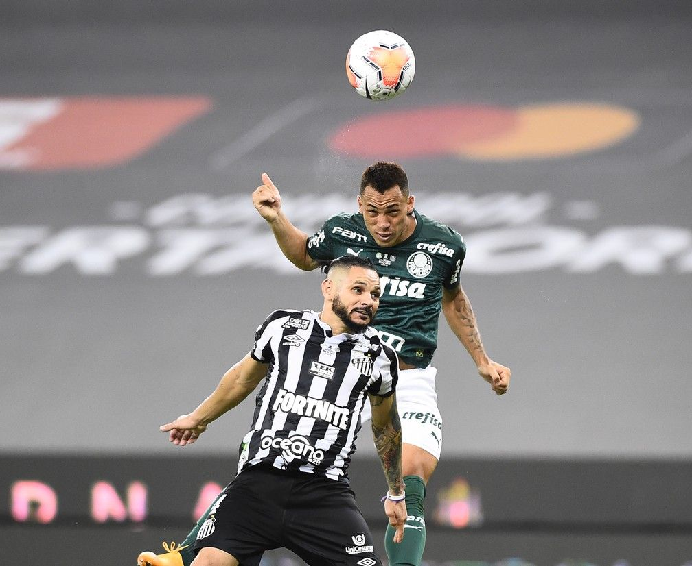

Título inédito da libertadores 2020
Breno Lopes marcou o gol da vitória épica para o Palmeiras na final da Libertadores de 2020. Aos 53 minutos do segundo tempo, ele aproveitou um cruzamento de Rony e cabeceou para o gol, selando a conquista do título contra o Santos, com um placar de 1 a 0. Foi um momento histórico para o clube e para o próprio Breno Lopes.